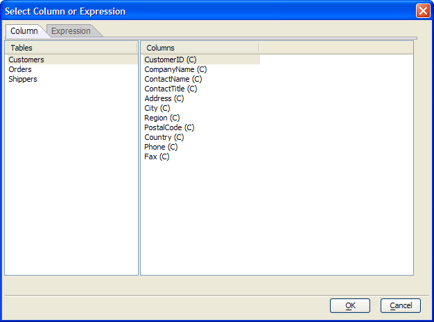
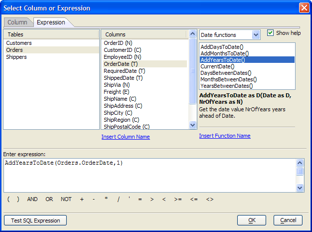

Select Column or Expression Dialog
The Select Column or Expression dialog helps you define and validate expressions used in the <span class=Screen>SQL Genie</span>. The value that you see in the Enter expression text box is returned to the calling dialog when you click OK.
Using the Column Tab
Each expression in a WHERE clause references a column. There many possible ways to create an expression. To insert a column name, select the table in the Tables list that contains the column you want to reference. Select the column name in the Columns list and click OK.

Using the Expression Tab
You may directly enter an expression into the Enter expression text box. You may also use the Tables, Columns, and Functions lists to select values to use in expressions.

These are the tools that the Select Column or Expression dialog provides.
|
Item to Insert |
Procedure |
|
Column name |
If there is more than one entry in the Tables list, select the table that contains the column you want to reference. Place the cursor in the correction location in the Enter expression text box and either:
|
|
Function |
Optionally, select a function category from the drop down list as top right. Scroll through the Functions list to find the function you want to use. Place the cursor in the correct location in the Enter expression text box and either:
|
|
Operator |
Various operators and logical keywords are located at the bottom of the dialog. Place the cursor in the correction location in the Enter expression text box and click the operator you want to insert. |
 Note : The Select
Column or Expression dialog does not guarantee that your entry
in the Enter expression text box will be syntactically
correct. To validate you input, click Test SQL Expression.
Note : The Select
Column or Expression dialog does not guarantee that your entry
in the Enter expression text box will be syntactically
correct. To validate you input, click Test SQL Expression.
See Also